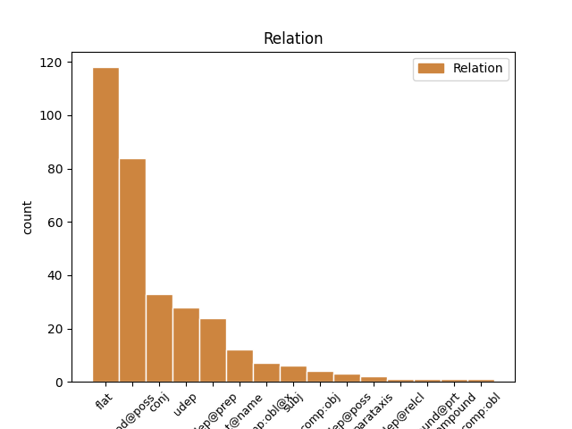
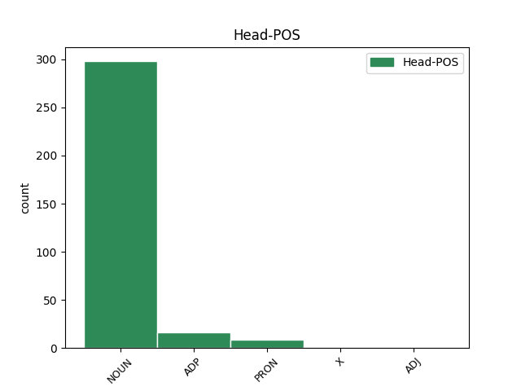
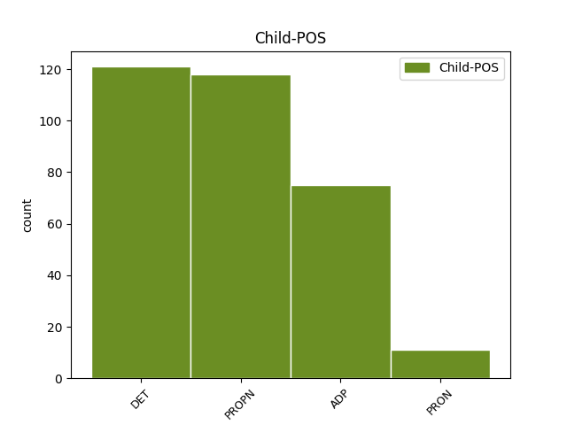

Distribution of features within this leaf



Agreement Rules sorted by frequency.
- When the dependent token is the modifer(mod@poss) of the head token, and the head token is NOUN and the dependent token is DET.
1 dhá _ _ _ _ 0 _ _ _
2 chill _ _ _ _ 0 _ _ _
3 leictreacha _ _ _ _ 0 _ _ _
4 nó _ _ _ _ 0 _ _ _
5 níos _ _ _ _ 0 _ _ _
6 mó _ _ _ _ 0 _ _ _
7 a _ _ _ _ 0 _ _ _
8 tháirgeann _ _ _ _ 0 _ _ _
9 leictreachas _ _ _ _ 0 _ _ _
10 ; _ _ _ _ 0 _ _ _
11 tarlaíonn _ _ _ _ 0 _ _ _
12 sé _ _ _ _ 0 _ _ _
13 seo _ _ _ _ 0 _ _ _
14 nuair _ _ _ _ 0 _ _ _
15 a _ _ _ _ 0 _ _ _
16 imoibríonn _ _ _ _ 0 _ _ _
17 na _ _ _ _ 0 _ _ _
18 ceimiceáin _ _ _ _ 0 _ _ _
19 laistigh _ _ _ _ 0 _ _ _
20 den _ _ _ _ 0 _ _ _
21 chadhnra _ _ _ _ 0 _ _ _
22 ar _ _ _ _ 0 _ _ _
23 a a DET Det Gender=Masc|Number=Sing|Person=3|Poss=Yes 24 mod@poss _ _
24 chéile céile NOUN Noun Form=Len|Gender=Masc|Number=Sing 0 _ _ _
25 ; _ _ _ _ 0 _ _ _
26 braitheann _ _ _ _ 0 _ _ _
27 vóltas _ _ _ _ 0 _ _ _
28 cadhnra _ _ _ _ 0 _ _ _
29 ar _ _ _ _ 0 _ _ _
30 líon _ _ _ _ 0 _ _ _
31 na _ _ _ _ 0 _ _ _
32 gcill _ _ _ _ 0 _ _ _
33 a _ _ _ _ 0 _ _ _
34 bhíonn _ _ _ _ 0 _ _ _
35 ann _ _ _ _ 0 _ _ _
36 : _ _ _ _ 0 _ _ _
37 dá _ _ _ _ 0 _ _ _
38 mhéid _ _ _ _ 0 _ _ _
39 cill _ _ _ _ 0 _ _ _
40 is _ _ _ _ 0 _ _ _
41 ea _ _ _ _ 0 _ _ _
42 is _ _ _ _ 0 _ _ _
43 mó _ _ _ _ 0 _ _ _
44 an _ _ _ _ 0 _ _ _
45 vóltas _ _ _ _ 0 _ _ _
46 carbaihiodráití _ _ _ _ 0 _ _ _
47 . _ _ _ _ 0 _ _ _
1 Tugadh _ _ _ _ 0 _ _ _
2 ag _ _ _ _ 0 _ _ _
3 Ospidéal ospidéal NOUN Noun Gender=Masc|Number=Sing 0 _ _ _
4 Bhaile _ _ _ _ 0 _ _ _
5 Lochlainn Lochlainn PROPN Noun Case=Gen|Gender=Masc|Number=Sing 3 flat _ _
6 é _ _ _ _ 0 _ _ _
7 ach _ _ _ _ 0 _ _ _
8 ní _ _ _ _ 0 _ _ _
9 fios _ _ _ _ 0 _ _ _
10 fós _ _ _ _ 0 _ _ _
11 cé _ _ _ _ 0 _ _ _
12 chomh _ _ _ _ 0 _ _ _
13 mór _ _ _ _ 0 _ _ _
14 is _ _ _ _ 0 _ _ _
15 a _ _ _ _ 0 _ _ _
16 ghortaiodh _ _ _ _ 0 _ _ _
17 é _ _ _ _ 0 _ _ _
18 . _ _ _ _ 0 _ _ _
1 Ach _ _ _ _ 0 _ _ _
2 , _ _ _ _ 0 _ _ _
3 ó _ _ _ _ 0 _ _ _
4 thaobh taobh NOUN Noun Form=Len|Gender=Masc|Number=Sing 0 _ _ _
5 na _ _ _ _ 0 _ _ _
6 healaíne _ _ _ _ 0 _ _ _
7 de de ADP Prep Gender=Masc|Number=Sing|Person=3 4 udep _ SpaceAfter=No
8 , _ _ _ _ 0 _ _ _
9 teipeann _ _ _ _ 0 _ _ _
10 go _ _ _ _ 0 _ _ _
11 hiomlán _ _ _ _ 0 _ _ _
12 ar _ _ _ _ 0 _ _ _
13 an _ _ _ _ 0 _ _ _
14 bParlaimint _ _ _ _ 0 _ _ _
15 mar _ _ _ _ 0 _ _ _
16 phíosa _ _ _ _ 0 _ _ _
17 liteartha _ _ _ _ 0 _ _ _
18 , _ _ _ _ 0 _ _ _
19 de _ _ _ _ 0 _ _ _
20 bhrí _ _ _ _ 0 _ _ _
21 nach _ _ _ _ 0 _ _ _
22 bhfuil _ _ _ _ 0 _ _ _
23 an _ _ _ _ 0 _ _ _
24 t-údar _ _ _ _ 0 _ _ _
25 in _ _ _ _ 0 _ _ _
26 ann _ _ _ _ 0 _ _ _
27 an _ _ _ _ 0 _ _ _
28 dá _ _ _ _ 0 _ _ _
29 réim _ _ _ _ 0 _ _ _
30 cainte _ _ _ _ 0 _ _ _
31 a _ _ _ _ 0 _ _ _
32 nascadh _ _ _ _ 0 _ _ _
33 i _ _ _ _ 0 _ _ _
34 stíl _ _ _ _ 0 _ _ _
35 mhín _ _ _ _ 0 _ _ _
36 leanúnach _ _ _ _ 0 _ _ _
37 . _ _ _ _ 0 _ _ _
1 Tá _ _ _ _ 0 _ _ _
2 an _ _ _ _ 0 _ _ _
3 báchrán _ _ _ _ 0 _ _ _
4 an-searbh _ _ _ _ 0 _ _ _
5 le _ _ _ _ 0 _ _ _
6 hól _ _ _ _ 0 _ _ _
7 .. _ _ _ _ 0 _ _ _
8 Tá _ _ _ _ 0 _ _ _
9 an _ _ _ _ 0 _ _ _
10 Chomhairle _ _ _ _ 0 _ _ _
11 seo _ _ _ _ 0 _ _ _
12 ar _ _ _ _ 0 _ _ _
13 cheann _ _ _ _ 0 _ _ _
14 de _ _ _ _ 0 _ _ _
15 na _ _ _ _ 0 _ _ _
16 naoi _ _ _ _ 0 _ _ _
17 gcomhpháirtí _ _ _ _ 0 _ _ _
18 NASC _ _ _ _ 0 _ _ _
19 - _ _ _ _ 0 _ _ _
20 is _ _ _ _ 0 _ _ _
21 iad _ _ _ _ 0 _ _ _
22 na _ _ _ _ 0 _ _ _
23 cinn _ _ _ _ 0 _ _ _
24 eile _ _ _ _ 0 _ _ _
25 ná _ _ _ _ 0 _ _ _
26 : _ _ _ _ 0 _ _ _
27 Comhairlí _ _ _ _ 0 _ _ _
28 Contae _ _ _ _ 0 _ _ _
29 Chorcaigh _ _ _ _ 0 _ _ _
30 , _ _ _ _ 0 _ _ _
31 Dhún _ _ _ _ 0 _ _ _
32 na _ _ _ _ 0 _ _ _
33 nGall _ _ _ _ 0 _ _ _
34 , _ _ _ _ 0 _ _ _
35 Mhaigh _ _ _ _ 0 _ _ _
36 Eo _ _ _ _ 0 _ _ _
37 agus _ _ _ _ 0 _ _ _
38 Chiarraí _ _ _ _ 0 _ _ _
39 , _ _ _ _ 0 _ _ _
40 Comhairle _ _ _ _ 0 _ _ _
41 Chathair _ _ _ _ 0 _ _ _
42 na _ _ _ _ 0 _ _ _
43 Gaillimhe _ _ _ _ 0 _ _ _
44 , _ _ _ _ 0 _ _ _
45 Ollscoil ollscoil NOUN Noun Gender=Fem|Number=Sing 0 _ _ _
46 na na DET Art Case=Gen|Definite=Def|Gender=Fem|Number=Sing|PronType=Art 45 flat _ _
47 hÉireann _ _ _ _ 0 _ _ _
48 i _ _ _ _ 0 _ _ _
49 nGaillimh _ _ _ _ 0 _ _ _
50 , _ _ _ _ 0 _ _ _
51 Údarás _ _ _ _ 0 _ _ _
52 na _ _ _ _ 0 _ _ _
53 Gaeltachta _ _ _ _ 0 _ _ _
54 agus _ _ _ _ 0 _ _ _
55 Údarás _ _ _ _ 0 _ _ _
56 Réigiúnach _ _ _ _ 0 _ _ _
57 an _ _ _ _ 0 _ _ _
58 Iarthair _ _ _ _ 0 _ _ _
59 . _ _ _ _ 0 _ _ _
1 Óir _ _ _ _ 0 _ _ _
2 tá _ _ _ _ 0 _ _ _
3 Ninì _ _ _ _ 0 _ _ _
4 ach _ _ _ _ 0 _ _ _
5 oiread _ _ _ _ 0 _ _ _
6 leis _ _ _ _ 0 _ _ _
7 an _ _ _ _ 0 _ _ _
8 lámhscríbhinn _ _ _ _ 0 _ _ _
9 imithe _ _ _ _ 0 _ _ _
10 ina _ _ _ _ 0 _ _ _
11 rian _ _ _ _ 0 _ _ _
12 ar _ _ _ _ 0 _ _ _
13 íochtar _ _ _ _ 0 _ _ _
14 mo _ _ _ _ 0 _ _ _
15 chroí _ _ _ _ 0 _ _ _
16 mar _ _ _ _ 0 _ _ _
17 a _ _ _ _ 0 _ _ _
18 bheadh _ _ _ _ 0 _ _ _
19 rud _ _ _ _ 0 _ _ _
20 éigin _ _ _ _ 0 _ _ _
21 íonghlan _ _ _ _ 0 _ _ _
22 dothuigthe _ _ _ _ 0 _ _ _
23 ann _ _ _ _ 0 _ _ _
24 , _ _ _ _ 0 _ _ _
25 rud _ _ _ _ 0 _ _ _
26 ceomhar _ _ _ _ 0 _ _ _
27 diamhair _ _ _ _ 0 _ _ _
28 mar _ _ _ _ 0 _ _ _
29 is _ _ _ _ 0 _ _ _
30 dual _ _ _ _ 0 _ _ _
31 do _ _ _ _ 0 _ _ _
32 na _ _ _ _ 0 _ _ _
33 brionglóidí _ _ _ _ 0 _ _ _
34 , _ _ _ _ 0 _ _ _
35 an _ _ _ _ 0 _ _ _
36 péire _ _ _ _ 0 _ _ _
37 acu _ _ _ _ 0 _ _ _
38 tar _ _ _ _ 0 _ _ _
39 éis _ _ _ _ 0 _ _ _
40 leá _ _ _ _ 0 _ _ _
41 ina _ _ _ _ 0 _ _ _
42 chéile _ _ _ _ 0 _ _ _
43 ina _ _ _ _ 0 _ _ _
44 n-aon _ _ _ _ 0 _ _ _
45 rian _ _ _ _ 0 _ _ _
46 amháin _ _ _ _ 0 _ _ _
47 , _ _ _ _ 0 _ _ _
48 faoi _ _ _ _ 0 _ _ _
49 mar _ _ _ _ 0 _ _ _
50 a _ _ _ _ 0 _ _ _
51 bheadh _ _ _ _ 0 _ _ _
52 Ninì _ _ _ _ 0 _ _ _
53 díscaoilte _ _ _ _ 0 _ _ _
54 agus _ _ _ _ 0 _ _ _
55 an _ _ _ _ 0 _ _ _
56 lámhscríbhinn _ _ _ _ 0 _ _ _
57 ina _ _ _ _ 0 _ _ _
58 lámha _ _ _ _ 0 _ _ _
59 aici _ _ _ _ 0 _ _ _
60 , _ _ _ _ 0 _ _ _
61 an _ _ _ _ 0 _ _ _
62 lámhscríbhinn _ _ _ _ 0 _ _ _
63 in _ _ _ _ 0 _ _ _
64 éindí _ _ _ _ 0 _ _ _
65 léi _ _ _ _ 0 _ _ _
66 , _ _ _ _ 0 _ _ _
67 ina _ _ _ _ 0 _ _ _
68 cuid cuid NOUN Noun Gender=Fem|Number=Sing 0 _ _ _
69 dhlúth _ _ _ _ 0 _ _ _
70 di do ADP Prep Gender=Fem|Number=Sing|Person=3 68 udep@prep _ SpaceAfter=No
71 , _ _ _ _ 0 _ _ _
72 í _ _ _ _ 0 _ _ _
73 aontaithe _ _ _ _ 0 _ _ _
74 ar _ _ _ _ 0 _ _ _
75 fad _ _ _ _ 0 _ _ _
76 lena _ _ _ _ 0 _ _ _
77 pearsa _ _ _ _ 0 _ _ _
78 siúd _ _ _ _ 0 _ _ _
79 . _ _ _ _ 0 _ _ _
1 Sa _ _ _ _ 0 _ _ _
2 bhliain _ _ _ _ 0 _ _ _
3 san _ _ _ _ 0 _ _ _
4 ghaibh _ _ _ _ 0 _ _ _
5 na _ _ _ _ 0 _ _ _
6 Turcaigh _ _ _ _ 0 _ _ _
7 François _ _ _ _ 0 _ _ _
8 de _ _ _ _ 0 _ _ _
9 Vic _ _ _ _ 0 _ _ _
10 , _ _ _ _ 0 _ _ _
11 Tiarna tiarna NOUN Noun Gender=Masc|Number=Sing 0 _ _ _
12 Rieux Rieux PROPN Noun Gender=Masc|Number=Sing 11 flat@name _ _
13 sa _ _ _ _ 0 _ _ _
14 bhFrainc _ _ _ _ 0 _ _ _
15 agus _ _ _ _ 0 _ _ _
16 é _ _ _ _ 0 _ _ _
17 ar _ _ _ _ 0 _ _ _
18 thuras _ _ _ _ 0 _ _ _
19 go _ _ _ _ 0 _ _ _
20 dtí _ _ _ _ 0 _ _ _
21 Vín _ _ _ _ 0 _ _ _
22 . _ _ _ _ 0 _ _ _
1 Na _ _ _ _ 0 _ _ _
2 Toghranna _ _ _ _ 0 _ _ _
3 Ceantair _ _ _ _ 0 _ _ _
4 seo _ _ _ _ 0 _ _ _
5 a _ _ _ _ 0 _ _ _
6 leanas _ _ _ _ 0 _ _ _
7 : _ _ _ _ 0 _ _ _
8 Baile _ _ _ _ 0 _ _ _
9 an _ _ _ _ 0 _ _ _
10 Tóchair _ _ _ _ 0 _ _ _
11 Thoir _ _ _ _ 0 _ _ _
12 , _ _ _ _ 0 _ _ _
13 Baile _ _ _ _ 0 _ _ _
14 na _ _ _ _ 0 _ _ _
15 Cille _ _ _ _ 0 _ _ _
16 , _ _ _ _ 0 _ _ _
17 Lios _ _ _ _ 0 _ _ _
18 Conaidh _ _ _ _ 0 _ _ _
19 , _ _ _ _ 0 _ _ _
20 Droim _ _ _ _ 0 _ _ _
21 Fionn _ _ _ _ 0 _ _ _
22 , _ _ _ _ 0 _ _ _
23 Baile _ _ _ _ 0 _ _ _
24 an _ _ _ _ 0 _ _ _
25 Mhóta _ _ _ _ 0 _ _ _
26 , _ _ _ _ 0 _ _ _
27 Cluain _ _ _ _ 0 _ _ _
28 Eochaille _ _ _ _ 0 _ _ _
29 , _ _ _ _ 0 _ _ _
30 Liatroim _ _ _ _ 0 _ _ _
31 , _ _ _ _ 0 _ _ _
32 Tobar _ _ _ _ 0 _ _ _
33 an _ _ _ _ 0 _ _ _
34 Choire _ _ _ _ 0 _ _ _
35 , _ _ _ _ 0 _ _ _
36 Cill _ _ _ _ 0 _ _ _
37 Toraí _ _ _ _ 0 _ _ _
38 , _ _ _ _ 0 _ _ _
39 Coill _ _ _ _ 0 _ _ _
40 Mhór _ _ _ _ 0 _ _ _
41 , _ _ _ _ 0 _ _ _
42 Cill _ _ _ _ 0 _ _ _
43 Fraoigh _ _ _ _ 0 _ _ _
44 , _ _ _ _ 0 _ _ _
45 Cúil _ _ _ _ 0 _ _ _
46 Ó _ _ _ _ 0 _ _ _
47 bhFinn _ _ _ _ 0 _ _ _
48 , _ _ _ _ 0 _ _ _
49 Cill _ _ _ _ 0 _ _ _
50 Athracht _ _ _ _ 0 _ _ _
51 , _ _ _ _ 0 _ _ _
52 Teampall _ _ _ _ 0 _ _ _
53 an _ _ _ _ 0 _ _ _
54 Mhanaigh _ _ _ _ 0 _ _ _
55 , _ _ _ _ 0 _ _ _
56 Eachineach _ _ _ _ 0 _ _ _
57 , _ _ _ _ 0 _ _ _
58 Cill _ _ _ _ 0 _ _ _
59 Mhic _ _ _ _ 0 _ _ _
60 Treana _ _ _ _ 0 _ _ _
61 , _ _ _ _ 0 _ _ _
62 Baile _ _ _ _ 0 _ _ _
63 na _ _ _ _ 0 _ _ _
64 Sí _ _ _ _ 0 _ _ _
65 , _ _ _ _ 0 _ _ _
66 Seanchua _ _ _ _ 0 _ _ _
67 , _ _ _ _ 0 _ _ _
68 Droim _ _ _ _ 0 _ _ _
69 Colm _ _ _ _ 0 _ _ _
70 , _ _ _ _ 0 _ _ _
71 Baile _ _ _ _ 0 _ _ _
72 idir _ _ _ _ 0 _ _ _
73 Dhá _ _ _ _ 0 _ _ _
74 Abhainn _ _ _ _ 0 _ _ _
75 , _ _ _ _ 0 _ _ _
76 Achadh _ _ _ _ 0 _ _ _
77 Mhór _ _ _ _ 0 _ _ _
78 , _ _ _ _ 0 _ _ _
79 Breicshliabh _ _ _ _ 0 _ _ _
80 , _ _ _ _ 0 _ _ _
81 Droim droim NOUN Noun Gender=Masc|Number=Sing 0 _ _ _
82 Ráithe _ _ _ _ 0 _ _ _
83 , _ _ _ _ 0 _ _ _
84 Tuaim Tuaim PROPN Noun Gender=Masc|Number=Sing 81 conj _ _
85 Fhobhair _ _ _ _ 0 _ _ _
86 , _ _ _ _ 0 _ _ _
87 Cill _ _ _ _ 0 _ _ _
88 Sealbhaigh _ _ _ _ 0 _ _ _
89 , _ _ _ _ 0 _ _ _
90 Cill _ _ _ _ 0 _ _ _
91 Duibh _ _ _ _ 0 _ _ _
92 Dúin _ _ _ _ 0 _ _ _
93 , _ _ _ _ 0 _ _ _
94 Cill _ _ _ _ 0 _ _ _
95 Dá _ _ _ _ 0 _ _ _
96 Loch _ _ _ _ 0 _ _ _
97 , _ _ _ _ 0 _ _ _
98 Cartrún _ _ _ _ 0 _ _ _
99 , _ _ _ _ 0 _ _ _
100 Cúil _ _ _ _ 0 _ _ _
101 Áine _ _ _ _ 0 _ _ _
102 , _ _ _ _ 0 _ _ _
103 Abhainn _ _ _ _ 0 _ _ _
104 Mhór _ _ _ _ 0 _ _ _
105 , _ _ _ _ 0 _ _ _
106 An _ _ _ _ 0 _ _ _
107 Teampall _ _ _ _ 0 _ _ _
108 , _ _ _ _ 0 _ _ _
109 Eanach _ _ _ _ 0 _ _ _
110 , _ _ _ _ 0 _ _ _
111 Carraig _ _ _ _ 0 _ _ _
112 Beannchair _ _ _ _ 0 _ _ _
113 , _ _ _ _ 0 _ _ _
114 Cúil _ _ _ _ 0 _ _ _
115 Mhuine _ _ _ _ 0 _ _ _
116 agus _ _ _ _ 0 _ _ _
117 Baile _ _ _ _ 0 _ _ _
118 an _ _ _ _ 0 _ _ _
119 Tóchair _ _ _ _ 0 _ _ _
120 Thiar _ _ _ _ 0 _ _ _
121 . _ _ _ _ 0 _ _ _
1 Chomh _ _ _ _ 0 _ _ _
2 maith _ _ _ _ 0 _ _ _
3 leis _ _ _ _ 0 _ _ _
4 an _ _ _ _ 0 _ _ _
5 staidéar _ _ _ _ 0 _ _ _
6 atá _ _ _ _ 0 _ _ _
7 le _ _ _ _ 0 _ _ _
8 déanamh _ _ _ _ 0 _ _ _
9 don _ _ _ _ 0 _ _ _
10 Ardteist _ _ _ _ 0 _ _ _
11 bliain _ _ _ _ 0 _ _ _
12 ón _ _ _ _ 0 _ _ _
13 Samhradh _ _ _ _ 0 _ _ _
14 seo _ _ _ _ 0 _ _ _
15 tá _ _ _ _ 0 _ _ _
16 freastal _ _ _ _ 0 _ _ _
17 á do ADP Poss Gender=Masc|Number=Sing|Person=3|Poss=Yes|PronType=Prs 0 _ _ _
18 dhéanamh _ _ _ _ 0 _ _ _
19 aige ag ADP Prep Gender=Masc|Number=Sing|Person=3 17 udep@prep _ _
20 fosta _ _ _ _ 0 _ _ _
21 ar _ _ _ _ 0 _ _ _
22 éilimh _ _ _ _ 0 _ _ _
23 na _ _ _ _ 0 _ _ _
24 bhfoirne _ _ _ _ 0 _ _ _
25 eile _ _ _ _ 0 _ _ _
26 a _ _ _ _ 0 _ _ _
27 bhfuil _ _ _ _ 0 _ _ _
28 sé _ _ _ _ 0 _ _ _
29 mar _ _ _ _ 0 _ _ _
30 bhall _ _ _ _ 0 _ _ _
31 díobh _ _ _ _ 0 _ _ _
32 . _ _ _ _ 0 _ _ _
1 Fearacht _ _ _ _ 0 _ _ _
2 fhilí _ _ _ _ 0 _ _ _
3 Innti _ _ _ _ 0 _ _ _
4 , _ _ _ _ 0 _ _ _
5 agus _ _ _ _ 0 _ _ _
6 go _ _ _ _ 0 _ _ _
7 mórmhór _ _ _ _ 0 _ _ _
8 Liam _ _ _ _ 0 _ _ _
9 Ó _ _ _ _ 0 _ _ _
10 Muirthile _ _ _ _ 0 _ _ _
11 a _ _ _ _ 0 _ _ _
12 bhfuil _ _ _ _ 0 _ _ _
13 an _ _ _ _ 0 _ _ _
14 ceiliúradh _ _ _ _ 0 _ _ _
15 spleodrach _ _ _ _ 0 _ _ _
16 céanna _ _ _ _ 0 _ _ _
17 ar _ _ _ _ 0 _ _ _
18 a _ _ _ _ 0 _ _ _
19 bheith _ _ _ _ 0 _ _ _
20 beo _ _ _ _ 0 _ _ _
21 ag _ _ _ _ 0 _ _ _
22 sníomh _ _ _ _ 0 _ _ _
23 trína trí ADP Poss Gender=Masc|Number=Sing|Person=3|Poss=Yes 0 _ _ _
24 shaothar _ _ _ _ 0 _ _ _
25 agus _ _ _ _ 0 _ _ _
26 go _ _ _ _ 0 _ _ _
27 háirithe _ _ _ _ 0 _ _ _
28 trína trí ADP Poss Gender=Masc|Number=Sing|Person=3|Poss=Yes 23 conj _ _
29 dhán _ _ _ _ 0 _ _ _
30 fada _ _ _ _ 0 _ _ _
31 ' _ _ _ _ 0 _ _ _
32 Tine _ _ _ _ 0 _ _ _
33 Chnámh _ _ _ _ 0 _ _ _
34 ' _ _ _ _ 0 _ _ _
35 ( _ _ _ _ 0 _ _ _
36 Ó _ _ _ _ 0 _ _ _
37 Muirthile _ _ _ _ 0 _ _ _
38 1984 _ _ _ _ 0 _ _ _
39 , _ _ _ _ 0 _ _ _
40 87-112 _ _ _ _ 0 _ _ _
41 ) _ _ _ _ 0 _ _ _
42 , _ _ _ _ 0 _ _ _
43 gan _ _ _ _ 0 _ _ _
44 trácht _ _ _ _ 0 _ _ _
45 ar _ _ _ _ 0 _ _ _
46 Dhuibhneach _ _ _ _ 0 _ _ _
47 eile _ _ _ _ 0 _ _ _
48 , _ _ _ _ 0 _ _ _
49 Maidhc _ _ _ _ 0 _ _ _
50 Dainín _ _ _ _ 0 _ _ _
51 Ó _ _ _ _ 0 _ _ _
52 Sé _ _ _ _ 0 _ _ _
53 , _ _ _ _ 0 _ _ _
54 go _ _ _ _ 0 _ _ _
55 mórmhór _ _ _ _ 0 _ _ _
56 ina _ _ _ _ 0 _ _ _
57 úrscéal _ _ _ _ 0 _ _ _
58 Dochtúir _ _ _ _ 0 _ _ _
59 na _ _ _ _ 0 _ _ _
60 bPiast _ _ _ _ 0 _ _ _
61 ( _ _ _ _ 0 _ _ _
62 1993 _ _ _ _ 0 _ _ _
63 ) _ _ _ _ 0 _ _ _
64 , _ _ _ _ 0 _ _ _
65 ní _ _ _ _ 0 _ _ _
66 ualach _ _ _ _ 0 _ _ _
67 ar _ _ _ _ 0 _ _ _
68 Ó _ _ _ _ 0 _ _ _
69 Cíobháin _ _ _ _ 0 _ _ _
70 ar _ _ _ _ 0 _ _ _
71 shealbhaigh _ _ _ _ 0 _ _ _
72 sé _ _ _ _ 0 _ _ _
73 de _ _ _ _ 0 _ _ _
74 thraidisiún _ _ _ _ 0 _ _ _
75 ná _ _ _ _ 0 _ _ _
76 an _ _ _ _ 0 _ _ _
77 teanga _ _ _ _ 0 _ _ _
78 a _ _ _ _ 0 _ _ _
79 d' _ _ _ _ 0 _ _ _
80 iompair _ _ _ _ 0 _ _ _
81 an _ _ _ _ 0 _ _ _
82 traidisiún _ _ _ _ 0 _ _ _
83 sin _ _ _ _ 0 _ _ _
84 . _ _ _ _ 0 _ _ _
1 Óir _ _ _ _ 0 _ _ _
2 tá _ _ _ _ 0 _ _ _
3 Ninì _ _ _ _ 0 _ _ _
4 ach _ _ _ _ 0 _ _ _
5 oiread _ _ _ _ 0 _ _ _
6 leis _ _ _ _ 0 _ _ _
7 an _ _ _ _ 0 _ _ _
8 lámhscríbhinn _ _ _ _ 0 _ _ _
9 imithe _ _ _ _ 0 _ _ _
10 ina _ _ _ _ 0 _ _ _
11 rian _ _ _ _ 0 _ _ _
12 ar _ _ _ _ 0 _ _ _
13 íochtar _ _ _ _ 0 _ _ _
14 mo _ _ _ _ 0 _ _ _
15 chroí _ _ _ _ 0 _ _ _
16 mar _ _ _ _ 0 _ _ _
17 a _ _ _ _ 0 _ _ _
18 bheadh _ _ _ _ 0 _ _ _
19 rud _ _ _ _ 0 _ _ _
20 éigin _ _ _ _ 0 _ _ _
21 íonghlan _ _ _ _ 0 _ _ _
22 dothuigthe _ _ _ _ 0 _ _ _
23 ann _ _ _ _ 0 _ _ _
24 , _ _ _ _ 0 _ _ _
25 rud _ _ _ _ 0 _ _ _
26 ceomhar _ _ _ _ 0 _ _ _
27 diamhair _ _ _ _ 0 _ _ _
28 mar _ _ _ _ 0 _ _ _
29 is _ _ _ _ 0 _ _ _
30 dual _ _ _ _ 0 _ _ _
31 do _ _ _ _ 0 _ _ _
32 na _ _ _ _ 0 _ _ _
33 brionglóidí _ _ _ _ 0 _ _ _
34 , _ _ _ _ 0 _ _ _
35 an _ _ _ _ 0 _ _ _
36 péire _ _ _ _ 0 _ _ _
37 acu _ _ _ _ 0 _ _ _
38 tar _ _ _ _ 0 _ _ _
39 éis _ _ _ _ 0 _ _ _
40 leá _ _ _ _ 0 _ _ _
41 ina _ _ _ _ 0 _ _ _
42 chéile _ _ _ _ 0 _ _ _
43 ina _ _ _ _ 0 _ _ _
44 n-aon _ _ _ _ 0 _ _ _
45 rian _ _ _ _ 0 _ _ _
46 amháin _ _ _ _ 0 _ _ _
47 , _ _ _ _ 0 _ _ _
48 faoi _ _ _ _ 0 _ _ _
49 mar _ _ _ _ 0 _ _ _
50 a _ _ _ _ 0 _ _ _
51 bheadh _ _ _ _ 0 _ _ _
52 Ninì _ _ _ _ 0 _ _ _
53 díscaoilte _ _ _ _ 0 _ _ _
54 agus _ _ _ _ 0 _ _ _
55 an _ _ _ _ 0 _ _ _
56 lámhscríbhinn _ _ _ _ 0 _ _ _
57 ina _ _ _ _ 0 _ _ _
58 lámha _ _ _ _ 0 _ _ _
59 aici _ _ _ _ 0 _ _ _
60 , _ _ _ _ 0 _ _ _
61 an _ _ _ _ 0 _ _ _
62 lámhscríbhinn _ _ _ _ 0 _ _ _
63 in _ _ _ _ 0 _ _ _
64 éindí _ _ _ _ 0 _ _ _
65 léi _ _ _ _ 0 _ _ _
66 , _ _ _ _ 0 _ _ _
67 ina i ADP Poss Gender=Fem|Number=Sing|Person=3|Poss=Yes 68 udep@poss _ _
68 cuid cuid NOUN Noun Gender=Fem|Number=Sing 0 _ _ _
69 dhlúth _ _ _ _ 0 _ _ _
70 di _ _ _ _ 0 _ _ _
71 , _ _ _ _ 0 _ _ _
72 í _ _ _ _ 0 _ _ _
73 aontaithe _ _ _ _ 0 _ _ _
74 ar _ _ _ _ 0 _ _ _
75 fad _ _ _ _ 0 _ _ _
76 lena _ _ _ _ 0 _ _ _
77 pearsa _ _ _ _ 0 _ _ _
78 siúd _ _ _ _ 0 _ _ _
79 . _ _ _ _ 0 _ _ _
1 (2) _ _ _ _ 0 _ _ _
2 Más _ _ _ _ 0 _ _ _
3 rud rud NOUN Noun Case=NomAcc|Gender=Masc|Number=Sing 0 _ _ _
4 é é PRON Pers Gender=Masc|Number=Sing|Person=3 3 subj _ SpaceAfter=No
5 , _ _ _ _ 0 _ _ _
6 áfach _ _ _ _ 0 _ _ _
7 , _ _ _ _ 0 _ _ _
8 go _ _ _ _ 0 _ _ _
9 ndéanfar _ _ _ _ 0 _ _ _
10 an _ _ _ _ 0 _ _ _
11 t-aistriú _ _ _ _ 0 _ _ _
12 gan _ _ _ _ 0 _ _ _
13 chomaoin _ _ _ _ 0 _ _ _
14 luachmhar _ _ _ _ 0 _ _ _
15 , _ _ _ _ 0 _ _ _
16 beidh _ _ _ _ 0 _ _ _
17 sé _ _ _ _ 0 _ _ _
18 , _ _ _ _ 0 _ _ _
19 chomh _ _ _ _ 0 _ _ _
20 fada _ _ _ _ 0 _ _ _
21 is _ _ _ _ 0 _ _ _
22 a _ _ _ _ 0 _ _ _
23 bhaineann _ _ _ _ 0 _ _ _
24 leis _ _ _ _ 0 _ _ _
25 an _ _ _ _ 0 _ _ _
26 aistrí _ _ _ _ 0 _ _ _
27 agus _ _ _ _ 0 _ _ _
28 le _ _ _ _ 0 _ _ _
29 daoine _ _ _ _ 0 _ _ _
30 a _ _ _ _ 0 _ _ _
31 bheidh _ _ _ _ 0 _ _ _
32 ag _ _ _ _ 0 _ _ _
33 éileamh _ _ _ _ 0 _ _ _
34 faoi _ _ _ _ 0 _ _ _
35 ar _ _ _ _ 0 _ _ _
36 dhóigh _ _ _ _ 0 _ _ _
37 seachas _ _ _ _ 0 _ _ _
38 ar _ _ _ _ 0 _ _ _
39 chomaoin _ _ _ _ 0 _ _ _
40 luachmhar _ _ _ _ 0 _ _ _
41 , _ _ _ _ 0 _ _ _
42 faoi _ _ _ _ 0 _ _ _
43 réir _ _ _ _ 0 _ _ _
44 gach _ _ _ _ 0 _ _ _
45 cirt _ _ _ _ 0 _ _ _
46 neamhchláraithe _ _ _ _ 0 _ _ _
47 a _ _ _ _ 0 _ _ _
48 raibh _ _ _ _ 0 _ _ _
49 an _ _ _ _ 0 _ _ _
50 talamh _ _ _ _ 0 _ _ _
51 a _ _ _ _ 0 _ _ _
52 aistreofar _ _ _ _ 0 _ _ _
53 ar _ _ _ _ 0 _ _ _
54 teachtadh _ _ _ _ 0 _ _ _
55 faoina _ _ _ _ 0 _ _ _
56 réir _ _ _ _ 0 _ _ _
57 ag _ _ _ _ 0 _ _ _
58 an _ _ _ _ 0 _ _ _
59 aistreoir _ _ _ _ 0 _ _ _
60 . _ _ _ _ 0 _ _ _
1 Is _ _ _ _ 0 _ _ _
2 tráth tráth NOUN Noun Gender=Masc|Number=Sing 0 _ _ _
3 eile _ _ _ _ 0 _ _ _
4 á do ADP Poss Gender=Masc|Number=Sing|Person=3|Poss=Yes|PronType=Prs 2 comp:obl@x _ _
5 rolladh _ _ _ _ 0 _ _ _
6 chugam _ _ _ _ 0 _ _ _
7 sruthánach _ _ _ _ 0 _ _ _
8 - _ _ _ _ 0 _ _ _
9 Róchruinn _ _ _ _ 0 _ _ _
10 , _ _ _ _ 0 _ _ _
11 rómhín _ _ _ _ 0 _ _ _
12 , _ _ _ _ 0 _ _ _
13 ró-neamhdhíobhálach _ _ _ _ 0 _ _ _
14 . _ _ _ _ 0 _ _ _
1 an _ _ _ _ 0 _ _ _
2 cairpéal _ _ _ _ 0 _ _ _
3 ( _ _ _ _ 0 _ _ _
4 baineann _ _ _ _ 0 _ _ _
5 ) _ _ _ _ 0 _ _ _
6 agus _ _ _ _ 0 _ _ _
7 an _ _ _ _ 0 _ _ _
8 staimín _ _ _ _ 0 _ _ _
9 ( _ _ _ _ 0 _ _ _
10 fireann _ _ _ _ 0 _ _ _
11 ) _ _ _ _ 0 _ _ _
12 ; _ _ _ _ 0 _ _ _
13 is _ _ _ _ 0 _ _ _
14 iad _ _ _ _ 0 _ _ _
15 codanna _ _ _ _ 0 _ _ _
16 an _ _ _ _ 0 _ _ _
17 chairpéil _ _ _ _ 0 _ _ _
18 an _ _ _ _ 0 _ _ _
19 stiogma _ _ _ _ 0 _ _ _
20 , _ _ _ _ 0 _ _ _
21 an _ _ _ _ 0 _ _ _
22 stíl _ _ _ _ 0 _ _ _
23 agus _ _ _ _ 0 _ _ _
24 an _ _ _ _ 0 _ _ _
25 tsíollann _ _ _ _ 0 _ _ _
26 ; _ _ _ _ 0 _ _ _
27 is _ _ _ _ 0 _ _ _
28 iad _ _ _ _ 0 _ _ _
29 an _ _ _ _ 0 _ _ _
30 t-antar _ _ _ _ 0 _ _ _
31 agus _ _ _ _ 0 _ _ _
32 an _ _ _ _ 0 _ _ _
33 fasc _ _ _ _ 0 _ _ _
34 codanna _ _ _ _ 0 _ _ _
35 an _ _ _ _ 0 _ _ _
36 staimín _ _ _ _ 0 _ _ _
37 ; _ _ _ _ 0 _ _ _
38 cuidíonn _ _ _ _ 0 _ _ _
39 na _ _ _ _ 0 _ _ _
40 piotail _ _ _ _ 0 _ _ _
41 , _ _ _ _ 0 _ _ _
42 a _ _ _ _ 0 _ _ _
43 bhíonn _ _ _ _ 0 _ _ _
44 dathannach _ _ _ _ 0 _ _ _
45 de _ _ _ _ 0 _ _ _
46 ghnáth _ _ _ _ 0 _ _ _
47 , _ _ _ _ 0 _ _ _
48 chun _ _ _ _ 0 _ _ _
49 feithidí _ _ _ _ 0 _ _ _
50 a _ _ _ _ 0 _ _ _
51 mhealladh _ _ _ _ 0 _ _ _
52 chun _ _ _ _ 0 _ _ _
53 an _ _ _ _ 0 _ _ _
54 bhlátha _ _ _ _ 0 _ _ _
55 chun _ _ _ _ 0 _ _ _
56 é _ _ _ _ 0 _ _ _
57 a _ _ _ _ 0 _ _ _
58 phailniú _ _ _ _ 0 _ _ _
59 ; _ _ _ _ 0 _ _ _
60 cosnaíonn _ _ _ _ 0 _ _ _
61 na _ _ _ _ 0 _ _ _
62 siopail _ _ _ _ 0 _ _ _
63 , _ _ _ _ 0 _ _ _
64 a _ _ _ _ 0 _ _ _
65 bhíonn _ _ _ _ 0 _ _ _
66 glas _ _ _ _ 0 _ _ _
67 de _ _ _ _ 0 _ _ _
68 ghnáth _ _ _ _ 0 _ _ _
69 agus _ _ _ _ 0 _ _ _
70 a _ _ _ _ 0 _ _ _
71 luíonn _ _ _ _ 0 _ _ _
72 lasmuigh _ _ _ _ 0 _ _ _
73 de _ _ _ _ 0 _ _ _
74 na _ _ _ _ 0 _ _ _
75 piotail _ _ _ _ 0 _ _ _
76 , _ _ _ _ 0 _ _ _
77 an _ _ _ _ 0 _ _ _
78 bláth _ _ _ _ 0 _ _ _
79 agus _ _ _ _ 0 _ _ _
80 é é PRON Pers Gender=Masc|Number=Sing|Person=3 0 _ _ _
81 ina i ADP Poss Gender=Masc|Number=Sing|Person=3|Poss=Yes 80 comp:obl@x _ _
82 bhachlóg _ _ _ _ 0 _ _ _
83 . _ _ _ _ 0 _ _ _
1 Trí _ _ _ _ 0 _ _ _
2 leagan leagan NOUN Noun Gender=Masc|Number=Sing 0 _ _ _
3 den _ _ _ _ 0 _ _ _
4 charr _ _ _ _ 0 _ _ _
5 nua _ _ _ _ 0 _ _ _
6 seo _ _ _ _ 0 _ _ _
7 atá _ _ _ _ 0 _ _ _
8 ar _ _ _ _ 0 _ _ _
9 an _ _ _ _ 0 _ _ _
10 margadh _ _ _ _ 0 _ _ _
11 faoi _ _ _ _ 0 _ _ _
12 láthair _ _ _ _ 0 _ _ _
13 , _ _ _ _ 0 _ _ _
14 cé _ _ _ _ 0 _ _ _
15 go _ _ _ _ 0 _ _ _
16 bhfuil _ _ _ _ 0 _ _ _
17 dhá _ _ _ _ 0 _ _ _
18 chineál _ _ _ _ 0 _ _ _
19 de _ _ _ _ 0 _ _ _
20 gach _ _ _ _ 0 _ _ _
21 ceann _ _ _ _ 0 _ _ _
22 ar _ _ _ _ 0 _ _ _
23 fáil _ _ _ _ 0 _ _ _
24 freisin _ _ _ _ 0 _ _ _
25 agus _ _ _ _ 0 _ _ _
26 an _ _ _ _ 0 _ _ _
27 praghasraon _ _ _ _ 0 _ _ _
28 ag _ _ _ _ 0 _ _ _
29 dul _ _ _ _ 0 _ _ _
30 ó _ _ _ _ 0 _ _ _
31 Euro _ _ _ _ 0 _ _ _
32 16,675 _ _ _ _ 0 _ _ _
33 go _ _ _ _ 0 _ _ _
34 dtí _ _ _ _ 0 _ _ _
35 Euro _ _ _ _ 0 _ _ _
36 19,175 _ _ _ _ 0 _ _ _
37 ( _ _ _ _ 0 _ _ _
38 ex-Corcaigh ex-Corcaigh PROPN Noun Gender=Masc|Number=Sing 2 parataxis _ SpaceAfter=No
39 ) _ _ _ _ 0 _ _ _
40 . _ _ _ _ 0 _ _ _
1 (2) _ _ _ _ 0 _ _ _
2 Déanfaidh _ _ _ _ 0 _ _ _
3 iniúchóir iniúchóir NOUN Noun Case=NomAcc|Gender=Masc|Number=Sing 0 _ _ _
4 arna ar ADP Poss Gender=Masc|Number=Sing|Person=3|Poss=Yes 3 udep@relcl _ _
5 cheapadh _ _ _ _ 0 _ _ _
6 nó _ _ _ _ 0 _ _ _
7 arna _ _ _ _ 0 _ _ _
8 ceapadh _ _ _ _ 0 _ _ _
9 faoi _ _ _ _ 0 _ _ _
10 fho-alt _ _ _ _ 0 _ _ _
11 (1) _ _ _ _ 0 _ _ _
12 tuarascáil _ _ _ _ 0 _ _ _
13 i _ _ _ _ 0 _ _ _
14 scríbhinn _ _ _ _ 0 _ _ _
15 a _ _ _ _ 0 _ _ _
16 ullmhú _ _ _ _ 0 _ _ _
17 i _ _ _ _ 0 _ _ _
18 dtaobh _ _ _ _ 0 _ _ _
19 torthaí _ _ _ _ 0 _ _ _
20 aon _ _ _ _ 0 _ _ _
21 scrúduithe _ _ _ _ 0 _ _ _
22 agus _ _ _ _ 0 _ _ _
23 imscrúduithe _ _ _ _ 0 _ _ _
24 a _ _ _ _ 0 _ _ _
25 bheidh _ _ _ _ 0 _ _ _
26 déanta _ _ _ _ 0 _ _ _
27 aige _ _ _ _ 0 _ _ _
28 nó _ _ _ _ 0 _ _ _
29 aici _ _ _ _ 0 _ _ _
30 faoin _ _ _ _ 0 _ _ _
31 alt _ _ _ _ 0 _ _ _
32 seo _ _ _ _ 0 _ _ _
33 agus _ _ _ _ 0 _ _ _
34 déanfaidh _ _ _ _ 0 _ _ _
35 sé _ _ _ _ 0 _ _ _
36 nó _ _ _ _ 0 _ _ _
37 sí _ _ _ _ 0 _ _ _
38 , _ _ _ _ 0 _ _ _
39 má _ _ _ _ 0 _ _ _
40 iarrann _ _ _ _ 0 _ _ _
41 agus _ _ _ _ 0 _ _ _
42 aon _ _ _ _ 0 _ _ _
43 uair _ _ _ _ 0 _ _ _
44 a _ _ _ _ 0 _ _ _
45 iarrann _ _ _ _ 0 _ _ _
46 an _ _ _ _ 0 _ _ _
47 tArd- _ _ _ _ 0 _ _ _
48 Reachtaire _ _ _ _ 0 _ _ _
49 amhlaidh _ _ _ _ 0 _ _ _
50 air _ _ _ _ 0 _ _ _
51 nó _ _ _ _ 0 _ _ _
52 uirthi _ _ _ _ 0 _ _ _
53 é _ _ _ _ 0 _ _ _
54 , _ _ _ _ 0 _ _ _
55 tuarascáil _ _ _ _ 0 _ _ _
56 eatramhach _ _ _ _ 0 _ _ _
57 i _ _ _ _ 0 _ _ _
58 scríbhinn _ _ _ _ 0 _ _ _
59 a _ _ _ _ 0 _ _ _
60 ullmhú _ _ _ _ 0 _ _ _
61 i _ _ _ _ 0 _ _ _
62 ndáil _ _ _ _ 0 _ _ _
63 le _ _ _ _ 0 _ _ _
64 haon _ _ _ _ 0 _ _ _
65 scrúduithe _ _ _ _ 0 _ _ _
66 agus _ _ _ _ 0 _ _ _
67 imscrúduithe _ _ _ _ 0 _ _ _
68 den _ _ _ _ 0 _ _ _
69 sórt _ _ _ _ 0 _ _ _
70 sin _ _ _ _ 0 _ _ _
71 agus _ _ _ _ 0 _ _ _
72 cuirfidh _ _ _ _ 0 _ _ _
73 sé _ _ _ _ 0 _ _ _
74 nó _ _ _ _ 0 _ _ _
75 sí _ _ _ _ 0 _ _ _
76 faoi _ _ _ _ 0 _ _ _
77 deara _ _ _ _ 0 _ _ _
78 aon _ _ _ _ 0 _ _ _
79 tuarascáil _ _ _ _ 0 _ _ _
80 den _ _ _ _ 0 _ _ _
81 sórt _ _ _ _ 0 _ _ _
82 sin _ _ _ _ 0 _ _ _
83 a _ _ _ _ 0 _ _ _
84 chur _ _ _ _ 0 _ _ _
85 ar _ _ _ _ 0 _ _ _
86 fáil _ _ _ _ 0 _ _ _
87 don _ _ _ _ 0 _ _ _
88 Ard-Reachtaire _ _ _ _ 0 _ _ _
89 . _ _ _ _ 0 _ _ _
1 I _ _ _ _ 0 _ _ _
2 gColáiste _ _ _ _ 0 _ _ _
3 na _ _ _ _ 0 _ _ _
4 Tríonóide _ _ _ _ 0 _ _ _
5 dó _ _ _ _ 0 _ _ _
6 , _ _ _ _ 0 _ _ _
7 bhí _ _ _ _ 0 _ _ _
8 sé _ _ _ _ 0 _ _ _
9 ina i ADP Poss Gender=Masc|Number=Sing|Person=3|Poss=Yes 0 _ _ _
10 Reachtaire Reachtaire PROPN Noun Case=NomAcc|Gender=Masc|Number=Sing 9 comp:obj _ _
11 ar _ _ _ _ 0 _ _ _
12 Chumann _ _ _ _ 0 _ _ _
13 Gaedhealach _ _ _ _ 0 _ _ _
14 an _ _ _ _ 0 _ _ _
15 Choláiste _ _ _ _ 0 _ _ _
16 agus _ _ _ _ 0 _ _ _
17 ina _ _ _ _ 0 _ _ _
18 rúnaí _ _ _ _ 0 _ _ _
19 ag _ _ _ _ 0 _ _ _
20 an _ _ _ _ 0 _ _ _
21 College _ _ _ _ 0 _ _ _
22 Choral _ _ _ _ 0 _ _ _
23 Society _ _ _ _ 0 _ _ _
24 . _ _ _ _ 0 _ _ _
1 Mura _ _ _ _ 0 _ _ _
2 mbeadh _ _ _ _ 0 _ _ _
3 a _ _ _ _ 0 _ _ _
4 fhios _ _ _ _ 0 _ _ _
5 agat _ _ _ _ 0 _ _ _
6 go _ _ _ _ 0 _ _ _
7 raibh _ _ _ _ 0 _ _ _
8 sé sé PRON Pers Gender=Masc|Number=Sing|Person=3 0 _ _ _
9 féin _ _ _ _ 0 _ _ _
10 agus _ _ _ _ 0 _ _ _
11 an _ _ _ _ 0 _ _ _
12 Riadach Riada PROPN Noun Case=NomAcc|Definite=Def|Gender=Masc|Number=Sing 8 conj _ _
13 ann _ _ _ _ 0 _ _ _
14 , _ _ _ _ 0 _ _ _
15 is _ _ _ _ 0 _ _ _
16 beag _ _ _ _ 0 _ _ _
17 fianaise _ _ _ _ 0 _ _ _
18 eile _ _ _ _ 0 _ _ _
19 atá _ _ _ _ 0 _ _ _
20 le _ _ _ _ 0 _ _ _
21 fáil _ _ _ _ 0 _ _ _
22 sa _ _ _ _ 0 _ _ _
23 reilig _ _ _ _ 0 _ _ _
24 chéanna _ _ _ _ 0 _ _ _
25 go _ _ _ _ 0 _ _ _
26 bhfuil _ _ _ _ 0 _ _ _
27 beirt _ _ _ _ 0 _ _ _
28 de _ _ _ _ 0 _ _ _
29 mhór-cheannródaithe _ _ _ _ 0 _ _ _
30 i _ _ _ _ 0 _ _ _
31 litríocht _ _ _ _ 0 _ _ _
32 agus _ _ _ _ 0 _ _ _
33 i _ _ _ _ 0 _ _ _
34 gcultúr _ _ _ _ 0 _ _ _
35 na _ _ _ _ 0 _ _ _
36 hÉireann _ _ _ _ 0 _ _ _
37 curtha _ _ _ _ 0 _ _ _
38 ann _ _ _ _ 0 _ _ _
39 . _ _ _ _ 0 _ _ _
1 Ón _ _ _ _ 0 _ _ _
2 Bhaváir _ _ _ _ 0 _ _ _
3 cuireadh _ _ _ _ 0 _ _ _
4 ar _ _ _ _ 0 _ _ _
5 aghaidh _ _ _ _ 0 _ _ _
6 go _ _ _ _ 0 _ _ _
7 Beirlin _ _ _ _ 0 _ _ _
8 é é PRON Pers Gender=Masc|Number=Sing|Person=3 0 _ _ _
9 ina i ADP Poss Gender=Masc|Number=Sing|Person=3|Poss=Yes 8 udep _ _
10 nuinteas _ _ _ _ 0 _ _ _
11 chun _ _ _ _ 0 _ _ _
12 na _ _ _ _ 0 _ _ _
13 Gearmáine _ _ _ _ 0 _ _ _
14 ar _ _ _ _ 0 _ _ _
15 22 _ _ _ _ 0 _ _ _
16 Meitheamh _ _ _ _ 0 _ _ _
17 1920 _ _ _ _ 0 _ _ _
18 , _ _ _ _ 0 _ _ _
19 áit _ _ _ _ 0 _ _ _
20 a _ _ _ _ 0 _ _ _
21 raibh _ _ _ _ 0 _ _ _
22 sé _ _ _ _ 0 _ _ _
23 , _ _ _ _ 0 _ _ _
24 mar _ _ _ _ 0 _ _ _
25 ba _ _ _ _ 0 _ _ _
26 nós _ _ _ _ 0 _ _ _
27 , _ _ _ _ 0 _ _ _
28 ina _ _ _ _ 0 _ _ _
29 dhéan _ _ _ _ 0 _ _ _
30 ar _ _ _ _ 0 _ _ _
31 an _ _ _ _ 0 _ _ _
32 corps _ _ _ _ 0 _ _ _
33 taidhleoireachta _ _ _ _ 0 _ _ _
34 ar _ _ _ _ 0 _ _ _
35 fad _ _ _ _ 0 _ _ _
36 . _ _ _ _ 0 _ _ _
1 IS _ _ _ _ 0 _ _ _
2 É _ _ _ _ 0 _ _ _
3 IS _ _ _ _ 0 _ _ _
4 PAITRIARC patrarc NOUN Noun Case=NomAcc|Gender=Masc|Number=Sing 0 _ _ _
5 ann i ADP Prep Gender=Masc|Number=Sing|Person=3 4 comp:obl _ SpaceAfter=No
6 , _ _ _ _ 0 _ _ _
7 duine _ _ _ _ 0 _ _ _
8 ar _ _ _ _ 0 _ _ _
9 oibrigh _ _ _ _ 0 _ _ _
10 cumhacht _ _ _ _ 0 _ _ _
11 Dé _ _ _ _ 0 _ _ _
12 tríd _ _ _ _ 0 _ _ _
13 chun _ _ _ _ 0 _ _ _
14 an _ _ _ _ 0 _ _ _
15 cine _ _ _ _ 0 _ _ _
16 daonna _ _ _ _ 0 _ _ _
17 a _ _ _ _ 0 _ _ _
18 shlánú _ _ _ _ 0 _ _ _
19 , _ _ _ _ 0 _ _ _
20 duine _ _ _ _ 0 _ _ _
21 ar _ _ _ _ 0 _ _ _
22 gheall _ _ _ _ 0 _ _ _
23 Dia _ _ _ _ 0 _ _ _
24 dó _ _ _ _ 0 _ _ _
25 bheith _ _ _ _ 0 _ _ _
26 páirteach _ _ _ _ 0 _ _ _
27 in _ _ _ _ 0 _ _ _
28 obair _ _ _ _ 0 _ _ _
29 an _ _ _ _ 0 _ _ _
30 tslánaithe _ _ _ _ 0 _ _ _
31 sin _ _ _ _ 0 _ _ _
32 . _ _ _ _ 0 _ _ _
1 Bean _ _ _ _ 0 _ _ _
2 Uasal _ _ _ _ 0 _ _ _
3 : _ _ _ _ 0 _ _ _
4 Cén _ _ _ _ 0 _ _ _
5 dul dul NOUN Noun Case=NomAcc|Definite=Def|Gender=Masc|Number=Sing 0 _ _ _
6 as as ADP Prep Gender=Masc|Number=Sing|Person=3 5 compound@prt _ _
7 a _ _ _ _ 0 _ _ _
8 bhí _ _ _ _ 0 _ _ _
9 agam _ _ _ _ 0 _ _ _
10 ? _ _ _ _ 0 _ _ _
1 Fear _ _ _ _ 0 _ _ _
2 gnó _ _ _ _ 0 _ _ _
3 a _ _ _ _ 0 _ _ _
4 bhí _ _ _ _ 0 _ _ _
5 ann _ _ _ _ 0 _ _ _
6 agus _ _ _ _ 0 _ _ _
7 é é PRON Pers Gender=Masc|Number=Sing|Person=3 0 _ _ _
8 pósta _ _ _ _ 0 _ _ _
9 agus _ _ _ _ 0 _ _ _
10 é é PRON Pers Gender=Masc|Number=Sing|Person=3 7 conj _ _
11 ina _ _ _ _ 0 _ _ _
12 athair _ _ _ _ 0 _ _ _
13 do _ _ _ _ 0 _ _ _
14 bheirt _ _ _ _ 0 _ _ _
15 iníon _ _ _ _ 0 _ _ _
16 . _ _ _ _ 0 _ _ _
1 I _ _ _ _ 0 _ _ _
2 dtaca _ _ _ _ 0 _ _ _
3 le _ _ _ _ 0 _ _ _
4 Boird _ _ _ _ 0 _ _ _
5 Sláinte _ _ _ _ 0 _ _ _
6 de _ _ _ _ 0 _ _ _
7 , _ _ _ _ 0 _ _ _
8 déanann _ _ _ _ 0 _ _ _
9 an _ _ _ _ 0 _ _ _
10 tOrdú _ _ _ _ 0 _ _ _
11 Rialtais _ _ _ _ 0 _ _ _
12 an _ _ _ _ 0 _ _ _
13 méid _ _ _ _ 0 _ _ _
14 seo _ _ _ _ 0 _ _ _
15 a _ _ _ _ 0 _ _ _
16 leanas _ _ _ _ 0 _ _ _
17 a _ _ _ _ 0 _ _ _
18 eisiamh _ _ _ _ 0 _ _ _
19 ó _ _ _ _ 0 _ _ _
20 réim _ _ _ _ 0 _ _ _
21 an _ _ _ _ 0 _ _ _
22 Ombudsman _ _ _ _ 0 _ _ _
23 : _ _ _ _ 0 _ _ _
24 a) _ _ _ _ 0 _ _ _
25 daoine _ _ _ _ 0 _ _ _
26 a _ _ _ _ 0 _ _ _
27 bhíonn _ _ _ _ 0 _ _ _
28 ag _ _ _ _ 0 _ _ _
29 gníomhú _ _ _ _ 0 _ _ _
30 thar _ _ _ _ 0 _ _ _
31 ceann _ _ _ _ 0 _ _ _
32 bord _ _ _ _ 0 _ _ _
33 sláinte _ _ _ _ 0 _ _ _
34 agus _ _ _ _ 0 _ _ _
35 ( _ _ _ _ 0 _ _ _
36 i _ _ _ _ 0 _ _ _
37 dtuairim _ _ _ _ 0 _ _ _
38 an _ _ _ _ 0 _ _ _
39 Ombudsman _ _ _ _ 0 _ _ _
40 ) _ _ _ _ 0 _ _ _
41 , _ _ _ _ 0 _ _ _
42 á _ _ _ _ 0 _ _ _
43 dhéanamh _ _ _ _ 0 _ _ _
44 sin _ _ _ _ 0 _ _ _
45 le _ _ _ _ 0 _ _ _
46 linn _ _ _ _ 0 _ _ _
47 breithiúnas _ _ _ _ 0 _ _ _
48 cliniciúil _ _ _ _ 0 _ _ _
49 a _ _ _ _ 0 _ _ _
50 fheidhmiú _ _ _ _ 0 _ _ _
51 i _ _ _ _ 0 _ _ _
52 ndáil _ _ _ _ 0 _ _ _
53 le _ _ _ _ 0 _ _ _
54 fáthmheas _ _ _ _ 0 _ _ _
55 easláine _ _ _ _ 0 _ _ _
56 nó _ _ _ _ 0 _ _ _
57 le _ _ _ _ 0 _ _ _
58 cúram _ _ _ _ 0 _ _ _
59 nó _ _ _ _ 0 _ _ _
60 cóireáil _ _ _ _ 0 _ _ _
61 othar _ _ _ _ 0 _ _ _
62 , _ _ _ _ 0 _ _ _
63 cibé _ _ _ _ 0 _ _ _
64 acu _ _ _ _ 0 _ _ _
65 is _ _ _ _ 0 _ _ _
66 é _ _ _ _ 0 _ _ _
67 an _ _ _ _ 0 _ _ _
68 duine _ _ _ _ 0 _ _ _
69 a _ _ _ _ 0 _ _ _
70 ghlacann _ _ _ _ 0 _ _ _
71 an _ _ _ _ 0 _ _ _
72 gníomh _ _ _ _ 0 _ _ _
73 nó _ _ _ _ 0 _ _ _
74 aon _ _ _ _ 0 _ _ _
75 duine _ _ _ _ 0 _ _ _
76 eile _ _ _ _ 0 _ _ _
77 a _ _ _ _ 0 _ _ _
78 dheánann _ _ _ _ 0 _ _ _
79 an _ _ _ _ 0 _ _ _
80 breithiúnas breithiúnas NOUN Noun Definite=Def|Gender=Masc|Number=Sing 0 _ _ _
81 sin _ _ _ _ 0 _ _ _
82 , _ _ _ _ 0 _ _ _
83 agus _ _ _ _ 0 _ _ _
84 lena le ADP Poss Gender=Masc|Number=Sing|Person=3|Poss=Yes 80 conj _ _
85 linn _ _ _ _ 0 _ _ _
86 sin _ _ _ _ 0 _ _ _
87 amháin _ _ _ _ 0 _ _ _
88 , _ _ _ _ 0 _ _ _
89 nó _ _ _ _ 0 _ _ _
90 (b) _ _ _ _ 0 _ _ _
91 boird _ _ _ _ 0 _ _ _
92 sláinte _ _ _ _ 0 _ _ _
93 le _ _ _ _ 0 _ _ _
94 linn _ _ _ _ 0 _ _ _
95 dóibh _ _ _ _ 0 _ _ _
96 gníomhú _ _ _ _ 0 _ _ _
97 de _ _ _ _ 0 _ _ _
98 réir _ _ _ _ 0 _ _ _
99 comhairle _ _ _ _ 0 _ _ _
100 ó _ _ _ _ 0 _ _ _
101 dhaoine _ _ _ _ 0 _ _ _
102 atá _ _ _ _ 0 _ _ _
103 ag _ _ _ _ 0 _ _ _
104 gníomhú _ _ _ _ 0 _ _ _
105 mar _ _ _ _ 0 _ _ _
106 atá _ _ _ _ 0 _ _ _
107 réamhráite _ _ _ _ 0 _ _ _
108 , _ _ _ _ 0 _ _ _
109 ar _ _ _ _ 0 _ _ _
110 gníomhartha _ _ _ _ 0 _ _ _
111 de _ _ _ _ 0 _ _ _
112 chuid _ _ _ _ 0 _ _ _
113 bord _ _ _ _ 0 _ _ _
114 sláinte _ _ _ _ 0 _ _ _
115 iad _ _ _ _ 0 _ _ _
116 a _ _ _ _ 0 _ _ _
117 glacadh _ _ _ _ 0 _ _ _
118 , _ _ _ _ 0 _ _ _
119 i _ _ _ _ 0 _ _ _
120 dtuairim _ _ _ _ 0 _ _ _
121 an _ _ _ _ 0 _ _ _
122 Ombudsman _ _ _ _ 0 _ _ _
123 , _ _ _ _ 0 _ _ _
124 de _ _ _ _ 0 _ _ _
125 réir _ _ _ _ 0 _ _ _
126 na _ _ _ _ 0 _ _ _
127 comhairle _ _ _ _ 0 _ _ _
128 sin _ _ _ _ 0 _ _ _
129 amháin _ _ _ _ 0 _ _ _
130 . _ _ _ _ 0 _ _ _
1 Caitheann _ _ _ _ 0 _ _ _
2 sé _ _ _ _ 0 _ _ _
3 an _ _ _ _ 0 _ _ _
4 rud _ _ _ _ 0 _ _ _
5 ar _ _ _ _ 0 _ _ _
6 fad _ _ _ _ 0 _ _ _
7 i _ _ _ _ 0 _ _ _
8 dtraipisí _ _ _ _ 0 _ _ _
9 go _ _ _ _ 0 _ _ _
10 poiblí _ _ _ _ 0 _ _ _
11 ar _ _ _ _ 0 _ _ _
12 an _ _ _ _ 0 _ _ _
13 teilifís _ _ _ _ 0 _ _ _
14 agus _ _ _ _ 0 _ _ _
15 téann _ _ _ _ 0 _ _ _
16 ar _ _ _ _ 0 _ _ _
17 a _ _ _ _ 0 _ _ _
18 theitheadh _ _ _ _ 0 _ _ _
19 sa _ _ _ _ 0 _ _ _
20 deisceart _ _ _ _ 0 _ _ _
21 (19) _ _ _ _ 0 _ _ _
22 ; _ _ _ _ 0 _ _ _
23 ar _ _ _ _ 0 _ _ _
24 a a DET Det Gender=Masc|Number=Sing|Person=3|Poss=Yes 25 subj _ _
25 choimeád coimeád NOUN Noun Form=Len|Gender=Masc|Number=Sing 0 _ _ _
26 in _ _ _ _ 0 _ _ _
27 ospidéal _ _ _ _ 0 _ _ _
28 Naomh _ _ _ _ 0 _ _ _
29 Gréagóir _ _ _ _ 0 _ _ _
30 ina _ _ _ _ 0 _ _ _
31 dhiaidh _ _ _ _ 0 _ _ _
32 sin _ _ _ _ 0 _ _ _
33 ó _ _ _ _ 0 _ _ _
34 na _ _ _ _ 0 _ _ _
35 trioblóidí _ _ _ _ 0 _ _ _
36 a _ _ _ _ 0 _ _ _
37 tharraing _ _ _ _ 0 _ _ _
38 sé _ _ _ _ 0 _ _ _
39 air _ _ _ _ 0 _ _ _
40 féin _ _ _ _ 0 _ _ _
41 (20) _ _ _ _ 0 _ _ _
42 ; _ _ _ _ 0 _ _ _
43 teitheann _ _ _ _ 0 _ _ _
44 ón _ _ _ _ 0 _ _ _
45 ospidéal _ _ _ _ 0 _ _ _
46 ina _ _ _ _ 0 _ _ _
47 dhiaidh _ _ _ _ 0 _ _ _
48 sin _ _ _ _ 0 _ _ _
49 agus _ _ _ _ 0 _ _ _
50 is _ _ _ _ 0 _ _ _
51 sa _ _ _ _ 0 _ _ _
52 bhaile _ _ _ _ 0 _ _ _
53 i _ _ _ _ 0 _ _ _
54 Nead _ _ _ _ 0 _ _ _
55 na _ _ _ _ 0 _ _ _
56 gCreabhar _ _ _ _ 0 _ _ _
57 a _ _ _ _ 0 _ _ _
58 fhágaimid _ _ _ _ 0 _ _ _
59 ag _ _ _ _ 0 _ _ _
60 deireadh _ _ _ _ 0 _ _ _
61 é _ _ _ _ 0 _ _ _
62 (21) _ _ _ _ 0 _ _ _
63 . _ _ _ _ 0 _ _ _
1 Siúlann siúlann NOUN Noun Gender=Fem|Number=Sing 0 _ _ _
2 sé _ _ _ _ 0 _ _ _
3 Éire Éire PROPN Noun Gender=Fem|Number=Sing 1 comp:obj _ _
4 á _ _ _ _ 0 _ _ _
5 lorg _ _ _ _ 0 _ _ _
6 . _ _ _ _ 0 _ _ _
1 Tugadh _ _ _ _ 0 _ _ _
2 ag _ _ _ _ 0 _ _ _
3 Ospidéal _ _ _ _ 0 _ _ _
4 Bhaile _ _ _ _ 0 _ _ _
5 Lochlainn _ _ _ _ 0 _ _ _
6 é _ _ _ _ 0 _ _ _
7 ach _ _ _ _ 0 _ _ _
8 ní _ _ _ _ 0 _ _ _
9 fios _ _ _ _ 0 _ _ _
10 fós _ _ _ _ 0 _ _ _
11 cé _ _ _ _ 0 _ _ _
12 chomh _ _ _ _ 0 _ _ _
13 mór _ _ _ _ 0 _ _ _
14 is _ _ _ _ 0 _ _ _
15 a _ _ _ _ 0 _ _ _
16 ghortaiodh ghortaiodh NOUN Noun Gender=Masc|Number=Sing 0 _ _ _
17 é é PRON Pers Gender=Masc|Number=Sing|Person=3 16 comp:obj _ SpaceAfter=No
18 . _ _ _ _ 0 _ _ _
Disagree Examples:
1 (2) _ _ _ _ 0 _ _ _
2 Faoi _ _ _ _ 0 _ _ _
3 féir _ _ _ _ 0 _ _ _
4 fho-alt _ _ _ _ 0 _ _ _
5 (3) _ _ _ _ 0 _ _ _
6 den _ _ _ _ 0 _ _ _
7 alt _ _ _ _ 0 _ _ _
8 seo _ _ _ _ 0 _ _ _
9 , _ _ _ _ 0 _ _ _
10 ní _ _ _ _ 0 _ _ _
11 bheidh _ _ _ _ 0 _ _ _
12 aon _ _ _ _ 0 _ _ _
13 deontas _ _ _ _ 0 _ _ _
14 a _ _ _ _ 0 _ _ _
15 a _ _ _ _ 0 _ _ _
16 thabharfar _ _ _ _ 0 _ _ _
17 faoin _ _ _ _ 0 _ _ _
18 alt _ _ _ _ 0 _ _ _
19 seo _ _ _ _ 0 _ _ _
20 do _ _ _ _ 0 _ _ _
21 dhuine _ _ _ _ 0 _ _ _
22 - _ _ _ _ 0 _ _ _
23 (a) _ _ _ _ 0 _ _ _
24 i _ _ _ _ 0 _ _ _
25 leith _ _ _ _ 0 _ _ _
26 oibreacha _ _ _ _ 0 _ _ _
27 den _ _ _ _ 0 _ _ _
28 chineál _ _ _ _ 0 _ _ _
29 a _ _ _ _ 0 _ _ _
30 shonraítear _ _ _ _ 0 _ _ _
31 i _ _ _ _ 0 _ _ _
32 mír _ _ _ _ 0 _ _ _
33 (a) _ _ _ _ 0 _ _ _
34 , _ _ _ _ 0 _ _ _
35 (c) _ _ _ _ 0 _ _ _
36 nó _ _ _ _ 0 _ _ _
37 (f) _ _ _ _ 0 _ _ _
38 d' _ _ _ _ 0 _ _ _
39 fho-alt _ _ _ _ 0 _ _ _
40 (1) _ _ _ _ 0 _ _ _
41 den _ _ _ _ 0 _ _ _
42 alt _ _ _ _ 0 _ _ _
43 seo _ _ _ _ 0 _ _ _
44 níos _ _ _ _ 0 _ _ _
45 mó _ _ _ _ 0 _ _ _
46 - _ _ _ _ 0 _ _ _
47 (i) _ _ _ _ 0 _ _ _
48 i _ _ _ _ 0 _ _ _
49 gcás _ _ _ _ 0 _ _ _
50 ina _ _ _ _ 0 _ _ _
51 n-athfhoirgneoidh _ _ _ _ 0 _ _ _
52 an _ _ _ _ 0 _ _ _
53 duine _ _ _ _ 0 _ _ _
54 teach _ _ _ _ 0 _ _ _
55 chun _ _ _ _ 0 _ _ _
56 é _ _ _ _ 0 _ _ _
57 féin _ _ _ _ 0 _ _ _
58 á _ _ _ _ 0 _ _ _
59 áitiú _ _ _ _ 0 _ _ _
60 agus _ _ _ _ 0 _ _ _
61 gurb _ _ _ _ 0 _ _ _
62 í _ _ _ _ 0 _ _ _
63 an _ _ _ _ 0 _ _ _
64 talmhaíocht _ _ _ _ 0 _ _ _
65 go _ _ _ _ 0 _ _ _
66 haonarach _ _ _ _ 0 _ _ _
67 nó _ _ _ _ 0 _ _ _
68 go _ _ _ _ 0 _ _ _
69 formhór _ _ _ _ 0 _ _ _
70 a a DET Det Gender=Masc|Number=Sing|Person=3|Poss=Yes 71 mod@poss _ _
71 shlí slí NOUN Noun Case=NomAcc|Form=Len|Gender=Fem|Number=Sing 0 _ _ _
72 bheatha _ _ _ _ 0 _ _ _
73 agus _ _ _ _ 0 _ _ _
74 nach _ _ _ _ 0 _ _ _
75 mó _ _ _ _ 0 _ _ _
76 ná _ _ _ _ 0 _ _ _
77 seasca _ _ _ _ 0 _ _ _
78 punt _ _ _ _ 0 _ _ _
79 luacháil _ _ _ _ 0 _ _ _
80 inrátaithe _ _ _ _ 0 _ _ _
81 nó _ _ _ _ 0 _ _ _
82 comhiomlán _ _ _ _ 0 _ _ _
83 luachálacha _ _ _ _ 0 _ _ _
84 inrátaithe _ _ _ _ 0 _ _ _
85 na _ _ _ _ 0 _ _ _
86 talún _ _ _ _ 0 _ _ _
87 ( _ _ _ _ 0 _ _ _
88 más _ _ _ _ 0 _ _ _
89 ann _ _ _ _ 0 _ _ _
90 ) _ _ _ _ 0 _ _ _
91 agus _ _ _ _ 0 _ _ _
92 na _ _ _ _ 0 _ _ _
93 bhfoirgneamh _ _ _ _ 0 _ _ _
94 a _ _ _ _ 0 _ _ _
95 áitíonn _ _ _ _ 0 _ _ _
96 sé _ _ _ _ 0 _ _ _
97 , _ _ _ _ 0 _ _ _
98 ná _ _ _ _ 0 _ _ _
99 dhá _ _ _ _ 0 _ _ _
100 thrian _ _ _ _ 0 _ _ _
101 den _ _ _ _ 0 _ _ _
102 mhéid _ _ _ _ 0 _ _ _
103 a _ _ _ _ 0 _ _ _
104 measfaidh _ _ _ _ 0 _ _ _
105 an _ _ _ _ 0 _ _ _
106 tAire _ _ _ _ 0 _ _ _
107 gurb _ _ _ _ 0 _ _ _
108 é _ _ _ _ 0 _ _ _
109 costas _ _ _ _ 0 _ _ _
110 na _ _ _ _ 0 _ _ _
111 n-oibreacha _ _ _ _ 0 _ _ _
112 é _ _ _ _ 0 _ _ _
113 , _ _ _ _ 0 _ _ _
114 agus _ _ _ _ 0 _ _ _
115 (ii) _ _ _ _ 0 _ _ _
116 in _ _ _ _ 0 _ _ _
117 aon _ _ _ _ 0 _ _ _
118 chás _ _ _ _ 0 _ _ _
119 eile _ _ _ _ 0 _ _ _
120 , _ _ _ _ 0 _ _ _
121 ná _ _ _ _ 0 _ _ _
122 trian _ _ _ _ 0 _ _ _
123 den _ _ _ _ 0 _ _ _
124 mhéid _ _ _ _ 0 _ _ _
125 a _ _ _ _ 0 _ _ _
126 measfaidh _ _ _ _ 0 _ _ _
127 an _ _ _ _ 0 _ _ _
128 tAire _ _ _ _ 0 _ _ _
129 gurb _ _ _ _ 0 _ _ _
130 é _ _ _ _ 0 _ _ _
131 costas _ _ _ _ 0 _ _ _
132 na _ _ _ _ 0 _ _ _
133 n-oibreacha _ _ _ _ 0 _ _ _
134 é _ _ _ _ 0 _ _ _
135 , _ _ _ _ 0 _ _ _
136 (b) _ _ _ _ 0 _ _ _
137 i _ _ _ _ 0 _ _ _
138 leith _ _ _ _ 0 _ _ _
139 oibreacha _ _ _ _ 0 _ _ _
140 den _ _ _ _ 0 _ _ _
141 chineál _ _ _ _ 0 _ _ _
142 a _ _ _ _ 0 _ _ _
143 shonraítear _ _ _ _ 0 _ _ _
144 i _ _ _ _ 0 _ _ _
145 mír _ _ _ _ 0 _ _ _
146 (b) _ _ _ _ 0 _ _ _
147 d' _ _ _ _ 0 _ _ _
148 fho-alt _ _ _ _ 0 _ _ _
149 (1) _ _ _ _ 0 _ _ _
150 den _ _ _ _ 0 _ _ _
151 alt _ _ _ _ 0 _ _ _
152 seo _ _ _ _ 0 _ _ _
153 , _ _ _ _ 0 _ _ _
154 ná _ _ _ _ 0 _ _ _
155 trian _ _ _ _ 0 _ _ _
156 den _ _ _ _ 0 _ _ _
157 mhéid _ _ _ _ 0 _ _ _
158 a _ _ _ _ 0 _ _ _
159 measfaidh _ _ _ _ 0 _ _ _
160 an _ _ _ _ 0 _ _ _
161 tAire _ _ _ _ 0 _ _ _
162 gurb _ _ _ _ 0 _ _ _
163 é _ _ _ _ 0 _ _ _
164 costas _ _ _ _ 0 _ _ _
165 na _ _ _ _ 0 _ _ _
166 n-oibreacha _ _ _ _ 0 _ _ _
167 é _ _ _ _ 0 _ _ _
168 , _ _ _ _ 0 _ _ _
169 (c) _ _ _ _ 0 _ _ _
170 i _ _ _ _ 0 _ _ _
171 leith _ _ _ _ 0 _ _ _
172 oibreacha _ _ _ _ 0 _ _ _
173 den _ _ _ _ 0 _ _ _
174 chineál _ _ _ _ 0 _ _ _
175 a _ _ _ _ 0 _ _ _
176 shonraítear _ _ _ _ 0 _ _ _
177 i _ _ _ _ 0 _ _ _
178 mír _ _ _ _ 0 _ _ _
179 (d) _ _ _ _ 0 _ _ _
180 d' _ _ _ _ 0 _ _ _
181 fho-alt _ _ _ _ 0 _ _ _
182 (1) _ _ _ _ 0 _ _ _
183 den _ _ _ _ 0 _ _ _
184 alt _ _ _ _ 0 _ _ _
185 seo _ _ _ _ 0 _ _ _
186 , _ _ _ _ 0 _ _ _
187 ná _ _ _ _ 0 _ _ _
188 (d) _ _ _ _ 0 _ _ _
189 i _ _ _ _ 0 _ _ _
190 leith _ _ _ _ 0 _ _ _
191 oibreacha _ _ _ _ 0 _ _ _
192 den _ _ _ _ 0 _ _ _
193 chineál _ _ _ _ 0 _ _ _
194 a _ _ _ _ 0 _ _ _
195 shonraítear _ _ _ _ 0 _ _ _
196 i _ _ _ _ 0 _ _ _
197 mír _ _ _ _ 0 _ _ _
198 (e) _ _ _ _ 0 _ _ _
199 d' _ _ _ _ 0 _ _ _
200 fho-alt _ _ _ _ 0 _ _ _
201 (1) _ _ _ _ 0 _ _ _
202 den _ _ _ _ 0 _ _ _
203 alt _ _ _ _ 0 _ _ _
204 seo _ _ _ _ 0 _ _ _
205 , _ _ _ _ 0 _ _ _
206 ná _ _ _ _ 0 _ _ _
207 (a) _ _ _ _ 0 _ _ _
208 i _ _ _ _ 0 _ _ _
209 gcás _ _ _ _ 0 _ _ _
210 teach _ _ _ _ 0 _ _ _
211 nach _ _ _ _ 0 _ _ _
212 bhfuil _ _ _ _ 0 _ _ _
213 níos _ _ _ _ 0 _ _ _
214 mó _ _ _ _ 0 _ _ _
215 ná _ _ _ _ 0 _ _ _
216 trí _ _ _ _ 0 _ _ _
217 sheomra _ _ _ _ 0 _ _ _
218 ann _ _ _ _ 0 _ _ _
219 , _ _ _ _ 0 _ _ _
220 ná _ _ _ _ 0 _ _ _
221 céad _ _ _ _ 0 _ _ _
222 punt _ _ _ _ 0 _ _ _
223 , _ _ _ _ 0 _ _ _
224 (b) _ _ _ _ 0 _ _ _
225 i _ _ _ _ 0 _ _ _
226 gcás _ _ _ _ 0 _ _ _
227 teach _ _ _ _ 0 _ _ _
228 a _ _ _ _ 0 _ _ _
229 bhfuil _ _ _ _ 0 _ _ _
230 ceithre _ _ _ _ 0 _ _ _
231 sheomra _ _ _ _ 0 _ _ _
232 ann _ _ _ _ 0 _ _ _
233 , _ _ _ _ 0 _ _ _
234 ná _ _ _ _ 0 _ _ _
235 céad _ _ _ _ 0 _ _ _
236 is _ _ _ _ 0 _ _ _
237 fiche _ _ _ _ 0 _ _ _
238 punt _ _ _ _ 0 _ _ _
239 , _ _ _ _ 0 _ _ _
240 nó _ _ _ _ 0 _ _ _
241 (c) _ _ _ _ 0 _ _ _
242 i _ _ _ _ 0 _ _ _
243 gcás _ _ _ _ 0 _ _ _
244 teach _ _ _ _ 0 _ _ _
245 a _ _ _ _ 0 _ _ _
246 bhfuil _ _ _ _ 0 _ _ _
247 cúig _ _ _ _ 0 _ _ _
248 sheomra _ _ _ _ 0 _ _ _
249 nó _ _ _ _ 0 _ _ _
250 níos _ _ _ _ 0 _ _ _
251 mó _ _ _ _ 0 _ _ _
252 ann _ _ _ _ 0 _ _ _
253 , _ _ _ _ 0 _ _ _
254 ná _ _ _ _ 0 _ _ _
255 céad _ _ _ _ 0 _ _ _
256 is _ _ _ _ 0 _ _ _
257 daichead _ _ _ _ 0 _ _ _
258 punt _ _ _ _ 0 _ _ _
259 . _ _ _ _ 0 _ _ _
1 (4) _ _ _ _ 0 _ _ _
2 D' _ _ _ _ 0 _ _ _
3 fhonn _ _ _ _ 0 _ _ _
4 amhras _ _ _ _ 0 _ _ _
5 a _ _ _ _ 0 _ _ _
6 sheachaint _ _ _ _ 0 _ _ _
7 , _ _ _ _ 0 _ _ _
8 aon _ _ _ _ 0 _ _ _
9 achtachán _ _ _ _ 0 _ _ _
10 a _ _ _ _ 0 _ _ _
11 ndéantar _ _ _ _ 0 _ _ _
12 leasú _ _ _ _ 0 _ _ _
13 air _ _ _ _ 0 _ _ _
14 le _ _ _ _ 0 _ _ _
15 halt _ _ _ _ 0 _ _ _
16 den _ _ _ _ 0 _ _ _
17 Acht _ _ _ _ 0 _ _ _
18 seo _ _ _ _ 0 _ _ _
19 a _ _ _ _ 0 _ _ _
20 scoireann _ _ _ _ 0 _ _ _
21 de _ _ _ _ 0 _ _ _
22 bheith _ _ _ _ 0 _ _ _
23 i _ _ _ _ 0 _ _ _
24 ngníomh _ _ _ _ 0 _ _ _
25 amhail _ _ _ _ 0 _ _ _
26 ar _ _ _ _ 0 _ _ _
27 an _ _ _ _ 0 _ _ _
28 agus _ _ _ _ 0 _ _ _
29 ón _ _ _ _ 0 _ _ _
30 lá _ _ _ _ 0 _ _ _
31 dá _ _ _ _ 0 _ _ _
32 dtagraítear _ _ _ _ 0 _ _ _
33 i _ _ _ _ 0 _ _ _
34 bhfo-alt _ _ _ _ 0 _ _ _
35 (1) _ _ _ _ 0 _ _ _
36 nó _ _ _ _ 0 _ _ _
37 , _ _ _ _ 0 _ _ _
38 de _ _ _ _ 0 _ _ _
39 réir _ _ _ _ 0 _ _ _
40 mar _ _ _ _ 0 _ _ _
41 a _ _ _ _ 0 _ _ _
42 bheidh _ _ _ _ 0 _ _ _
43 , _ _ _ _ 0 _ _ _
44 amhail _ _ _ _ 0 _ _ _
45 ar _ _ _ _ 0 _ _ _
46 agus _ _ _ _ 0 _ _ _
47 ó _ _ _ _ 0 _ _ _
48 dháta _ _ _ _ 0 _ _ _
49 éagtha _ _ _ _ 0 _ _ _
50 na _ _ _ _ 0 _ _ _
51 tréimhse _ _ _ _ 0 _ _ _
52 ar _ _ _ _ 0 _ _ _
53 lena _ _ _ _ 0 _ _ _
54 linn _ _ _ _ 0 _ _ _
55 a _ _ _ _ 0 _ _ _
56 choimeádfar _ _ _ _ 0 _ _ _
57 i _ _ _ _ 0 _ _ _
58 ngníomh _ _ _ _ 0 _ _ _
59 é _ _ _ _ 0 _ _ _
60 faoi _ _ _ _ 0 _ _ _
61 fho-alt _ _ _ _ 0 _ _ _
62 (2) _ _ _ _ 0 _ _ _
63 ( _ _ _ _ 0 _ _ _
64 ' _ _ _ _ 0 _ _ _
65 an _ _ _ _ 0 _ _ _
66 t-éag _ _ _ _ 0 _ _ _
67 ' _ _ _ _ 0 _ _ _
68 ) _ _ _ _ 0 _ _ _
69 , _ _ _ _ 0 _ _ _
70 beidh _ _ _ _ 0 _ _ _
71 feidhm _ _ _ _ 0 _ _ _
72 aige _ _ _ _ 0 _ _ _
73 agus _ _ _ _ 0 _ _ _
74 beidh _ _ _ _ 0 _ _ _
75 éifeacht _ _ _ _ 0 _ _ _
76 leis _ _ _ _ 0 _ _ _
77 amhail _ _ _ _ 0 _ _ _
78 ar _ _ _ _ 0 _ _ _
79 an _ _ _ _ 0 _ _ _
80 agus _ _ _ _ 0 _ _ _
81 ón _ _ _ _ 0 _ _ _
82 lá _ _ _ _ 0 _ _ _
83 sin _ _ _ _ 0 _ _ _
84 nó _ _ _ _ 0 _ _ _
85 , _ _ _ _ 0 _ _ _
86 de _ _ _ _ 0 _ _ _
87 réir _ _ _ _ 0 _ _ _
88 mar _ _ _ _ 0 _ _ _
89 a _ _ _ _ 0 _ _ _
90 bheidh _ _ _ _ 0 _ _ _
91 , _ _ _ _ 0 _ _ _
92 amhail _ _ _ _ 0 _ _ _
93 ar _ _ _ _ 0 _ _ _
94 an _ _ _ _ 0 _ _ _
95 agus _ _ _ _ 0 _ _ _
96 ón _ _ _ _ 0 _ _ _
97 éag _ _ _ _ 0 _ _ _
98 , _ _ _ _ 0 _ _ _
99 mar _ _ _ _ 0 _ _ _
100 a _ _ _ _ 0 _ _ _
101 bhí _ _ _ _ 0 _ _ _
102 feidhm _ _ _ _ 0 _ _ _
103 aige _ _ _ _ 0 _ _ _
104 agus _ _ _ _ 0 _ _ _
105 éifeacht éifeacht NOUN Noun Case=NomAcc|Gender=Fem|Number=Sing 0 _ _ _
106 leis le ADP Prep Gender=Masc|Number=Sing|Person=3 105 udep@prep _ _
107 díreach _ _ _ _ 0 _ _ _
108 roimh _ _ _ _ 0 _ _ _
109 dháta _ _ _ _ 0 _ _ _
110 an _ _ _ _ 0 _ _ _
111 Achta _ _ _ _ 0 _ _ _
112 seo _ _ _ _ 0 _ _ _
113 a _ _ _ _ 0 _ _ _
114 rith _ _ _ _ 0 _ _ _
115 ach _ _ _ _ 0 _ _ _
116 sin _ _ _ _ 0 _ _ _
117 faoi _ _ _ _ 0 _ _ _
118 réir _ _ _ _ 0 _ _ _
119 aon _ _ _ _ 0 _ _ _
120 leasuithe _ _ _ _ 0 _ _ _
121 a _ _ _ _ 0 _ _ _
122 dhéanfar _ _ _ _ 0 _ _ _
123 le _ _ _ _ 0 _ _ _
124 haon _ _ _ _ 0 _ _ _
125 Acht _ _ _ _ 0 _ _ _
126 eile _ _ _ _ 0 _ _ _
127 den _ _ _ _ 0 _ _ _
128 Oireachtas _ _ _ _ 0 _ _ _
129 tar _ _ _ _ 0 _ _ _
130 éis _ _ _ _ 0 _ _ _
131 an _ _ _ _ 0 _ _ _
132 dáta _ _ _ _ 0 _ _ _
133 rite _ _ _ _ 0 _ _ _
134 sin _ _ _ _ 0 _ _ _
135 . _ _ _ _ 0 _ _ _
1 Chomh _ _ _ _ 0 _ _ _
2 maith _ _ _ _ 0 _ _ _
3 le _ _ _ _ 0 _ _ _
4 sin _ _ _ _ 0 _ _ _
5 , _ _ _ _ 0 _ _ _
6 bhronn _ _ _ _ 0 _ _ _
7 Teaghlach teaghlach NOUN Noun Case=NomAcc|Gender=Masc|Number=Sing 0 _ _ _
8 Uí _ _ _ _ 0 _ _ _
9 Ghallchóir Gallchóir PROPN Noun Case=Gen|Gender=Fem|Number=Sing 7 flat@name _ _
10 as _ _ _ _ 0 _ _ _
11 an _ _ _ _ 0 _ _ _
12 Bhun _ _ _ _ 0 _ _ _
13 Bheag _ _ _ _ 0 _ _ _
14 Corn _ _ _ _ 0 _ _ _
15 Cuimhneacháin _ _ _ _ 0 _ _ _
16 Hiúdaí _ _ _ _ 0 _ _ _
17 Bhig _ _ _ _ 0 _ _ _
18 ar _ _ _ _ 0 _ _ _
19 an _ _ _ _ 0 _ _ _
20 chomórtas _ _ _ _ 0 _ _ _
21 . _ _ _ _ 0 _ _ _
1 Tá _ _ _ _ 0 _ _ _
2 sé _ _ _ _ 0 _ _ _
3 fóirsteanach _ _ _ _ 0 _ _ _
4 go _ _ _ _ 0 _ _ _
5 maith _ _ _ _ 0 _ _ _
6 , _ _ _ _ 0 _ _ _
7 mar _ _ _ _ 0 _ _ _
8 sin _ _ _ _ 0 _ _ _
9 , _ _ _ _ 0 _ _ _
10 go _ _ _ _ 0 _ _ _
11 bhfuil _ _ _ _ 0 _ _ _
12 Golway _ _ _ _ 0 _ _ _
13 tar _ _ _ _ 0 _ _ _
14 éis _ _ _ _ 0 _ _ _
15 stair _ _ _ _ 0 _ _ _
16 Rannóg _ _ _ _ 0 _ _ _
17 Dóiteáin _ _ _ _ 0 _ _ _
18 Nua-Eabhrac _ _ _ _ 0 _ _ _
19 le _ _ _ _ 0 _ _ _
20 trí _ _ _ _ 0 _ _ _
21 chéad _ _ _ _ 0 _ _ _
22 bliain _ _ _ _ 0 _ _ _
23 anuas _ _ _ _ 0 _ _ _
24 a _ _ _ _ 0 _ _ _
25 scríobh _ _ _ _ 0 _ _ _
26 . _ _ _ _ 0 _ _ _
27 Tá _ _ _ _ 0 _ _ _
28 sé _ _ _ _ 0 _ _ _
29 le _ _ _ _ 0 _ _ _
30 fáil _ _ _ _ 0 _ _ _
31 ar _ _ _ _ 0 _ _ _
32 lch. _ _ _ _ 0 _ _ _
33 202-203 _ _ _ _ 0 _ _ _
34 de _ _ _ _ 0 _ _ _
35 S1067 _ _ _ _ 0 _ _ _
36 , _ _ _ _ 0 _ _ _
37 Scoil scoil NOUN Noun Case=NomAcc|Gender=Fem|Number=Sing 0 _ _ _
38 na _ _ _ _ 0 _ _ _
39 gCailíní _ _ _ _ 0 _ _ _
40 , _ _ _ _ 0 _ _ _
41 Doirí Doirí PROPN Noun Case=NomAcc|Gender=Masc|Number=Sing 37 compound _ _
42 Beaga _ _ _ _ 0 _ _ _
43 . _ _ _ _ 0 _ _ _
1 ' _ _ _ _ 0 _ _ _
2 Seirbhísí _ _ _ _ 0 _ _ _
3 Sóisialta _ _ _ _ 0 _ _ _
4 don _ _ _ _ 0 _ _ _
5 Chainteoir cainteoir NOUN Noun Case=NomAcc|Form=Len|Gender=Masc|Number=Sing 0 _ _ _
6 Gaeilge Gaeilge PROPN Noun Case=Gen|Gender=Fem|Number=Sing 5 flat _ _
7 / _ _ _ _ 0 _ _ _
8 Dátheangach _ _ _ _ 0 _ _ _
9 ' _ _ _ _ 0 _ _ _
10 a _ _ _ _ 0 _ _ _
11 bhí _ _ _ _ 0 _ _ _
12 mar _ _ _ _ 0 _ _ _
13 théama _ _ _ _ 0 _ _ _
14 ag _ _ _ _ 0 _ _ _
15 an _ _ _ _ 0 _ _ _
16 siompóisiam _ _ _ _ 0 _ _ _
17 , _ _ _ _ 0 _ _ _
18 a _ _ _ _ 0 _ _ _
19 d' _ _ _ _ 0 _ _ _
20 eagraigh _ _ _ _ 0 _ _ _
21 Comhdháil _ _ _ _ 0 _ _ _
22 Náisiúnta _ _ _ _ 0 _ _ _
23 na _ _ _ _ 0 _ _ _
24 Gaeilge _ _ _ _ 0 _ _ _
25 . _ _ _ _ 0 _ _ _